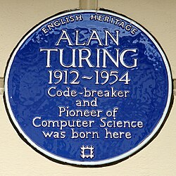
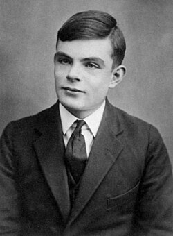
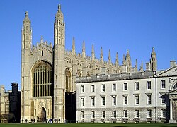
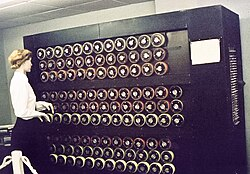
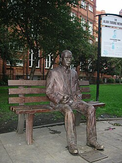

Turing en 1951
Introducción y Legado
Alan Mathison Turing fue un matemático, lógico, informático teórico, criptógrafo, filósofo y biólogo teórico británico. Es considerado como uno de los padres de la ciencia de la computación y precursor de la informática moderna. Proporcionó una formalización influyente de los conceptos de algoritmo y computación: la máquina de Turing. Formuló su propia versión que hoy es ampliamente aceptada como la tesis de Church-Turing (1936).
Durante la Segunda Guerra Mundial, trabajó en descifrar los códigos nazis, particularmente los de la máquina Enigma, y durante un tiempo fue el director de la sección Naval Enigma de Bletchley Park. Se ha estimado que su trabajo acortó la duración de esa guerra entre dos y cuatro años. Tras la guerra, diseñó uno de los primeros computadores electrónicos programables digitales en el Laboratorio Nacional de Física del Reino Unido y poco tiempo después construyó otra de las primeras máquinas en la Universidad de Mánchester.
Turing tiene un extenso legado con estatuas y muchas cosas que llevan su nombre, incluido un premio anual por innovación en informática. Aparece en el billete actual de 50 libras del Banco de Inglaterra, que se lanzó el 23 de junio de 2021, coincidiendo con su cumpleaños. Un programa de la BBC de 2019, votado por la audiencia, lo nombró la persona más grande del siglo XX.

Placa azul en la casa donde nació.
Biografía y Primeros años
Turing nació en el distrito londinense de Maida Vale. Su padre, Julius Mathison Turing, era miembro del cuerpo de funcionarios británicos en la India. Su madre, Ethel Sara Stoney, era hija de Edward Waller Stoney, ingeniero jefe de Madras Railways. Tanto Julius como Ethel querían que sus hijos se criaran en Gran Bretaña, por lo que se mudaron a Maida Vale, donde nació Alan el 23 de junio de 1912.
Durante su infancia, sus padres viajaron constantemente entre Hastings, Reino Unido, y la India debido a que su padre seguía activo en la Administración Colonial, por lo que pasó algunos años viviendo con su hermano en la casa de un matrimonio retirado del ejército. Muy pronto Turing mostró signos del genio que luego sería. Desde temprana edad mostró un gran interés por la lectura, por los números y los rompecabezas.

Turing a la edad de 16 años.
Estudios y Amistad con Christopher Morcom
En 1926, con trece años, ingresó en el internado de Sherborne, en Dorset. Su primer día de clase coincidió con la huelga general en Inglaterra, pero su determinación por asistir a clase era tan firme que recorrió con su bicicleta los más de 96 km que separaban Southampton de su escuela, pasando la noche en una posada.
La inclinación natural de Turing hacia la matemática y la ciencia no le atrajo el respeto de sus profesores de Sherborne, cuyo concepto de educación hacía mayor énfasis en los clásicos. Ganó la mayor parte de los premios matemáticos que se otorgaban y realizaba experimentos químicos por su cuenta. Llegó a resolver problemas muy avanzados para su edad (16 años) sin ni siquiera haber estudiado cálculo elemental.
Christopher Morcom estudiaba junto con Turing y ambos compartían la pasión por la ciencia. Alan se enamoró de él. Fue su primer amor y la primera persona que creyó en sus ideas. El 13 de febrero de 1930, Morcom falleció debido a complicaciones de la tuberculosis bovina. A raíz de esta vivencia, la fe religiosa de Turing desapareció por completo y se convirtió en ateo, obsesionándose por entender si el funcionamiento del cerebro humano era puramente materialista.

El King's College de Cambridge, donde estudió en 1931 y se convirtió en miembro en 1935. Su sala de informática lleva actualmente su nombre.
Universidad y Estudios sobre computabilidad
Turing ingresó en el Kings College de la Universidad de Cambridge en 1931. Tras su graduación, se trasladó a la Universidad de Princeton, donde trabajó con el lógico Alonzo Church. Recibió las enseñanzas de Godfrey Harold Hardy y en 1935 fue nombrado profesor del King's College.
Solución al problema de decisión
El Entscheidungsproblem o «problema de decisión» planteaba la búsqueda de un procedimiento algorítmico válido para solucionar las cuestiones matemáticas. David Hilbert formalizó el problema en 1928. Turing, en su trabajo Acerca de los números computables, introduce el concepto de la máquina de Turing y demuestra que es imposible escribir tal algoritmo. Como consecuencia, es imposible decidir con un algoritmo general si ciertas frases de la aritmética son ciertas o falsas.
Tesis Church-Turing
La tesis de Church-Turing formula hipotéticamente la equivalencia entre los conceptos de función computable y máquina de Turing: «Todo algoritmo es equivalente a una máquina de Turing». Esta hipótesis postula que cualquier modelo computacional existente tiene las mismas capacidades algorítmicas que una máquina de Turing.
Máquina de Turing
Turing reformuló los resultados de Kurt Gödel sobre los límites de la computación sustituyendo el lenguaje formal por dispositivos formales y simples conocidos hoy como máquinas de Turing. Demostró que dicha máquina era capaz de resolver cualquier problema matemático que pudiera representarse mediante un algoritmo. También probó que el problema de la parada es irresoluble.
Máquinas oracle
En su doctorado de Princeton introdujo el concepto de hipercomputación, ampliando las máquinas de Turing con las llamadas máquinas oracle, las cuales permitían el estudio de los problemas para los que no existe una solución algorítmica. Tras su regreso a Cambridge en 1939, mantuvo debates con Ludwig Wittgenstein sobre las bases de las matemáticas.

El Bombe replicaba la acción de varias máquinas Enigma.
Análisis criptográfico (Desciframiento de códigos)
En septiembre de 1939, Turing fue llamado a Bletchley Park, donde funcionaba la Escuela Gubernamental de Código y Cifrado. Se dedicaron a intentar interpretar las comunicaciones alemanas cifradas con la máquina Enigma, un sistema rotatorio que permitía más de diez mil billones de configuraciones distintas.
El equipo liderado por Turing detectó pautas en los mensajes y diseñó la máquina Bombe. Bombe buscaba la configuración de los rotores de la máquina alemana implementando una cadena de deducciones lógicas. Para marzo de 1940 el primer prototipo estaba terminado. Los historiadores afirman que su trabajo salvó alrededor de catorce millones de vidas. Al finalizar la guerra, las máquinas se desmantelaron y el trabajo permaneció en secreto hasta 1974.
Estudios sobre las primeras computadoras
De 1945 a 1948 trabajó en el Laboratorio Nacional de Física en el diseño del ACE (Automatic Computer Engine). Su deseo era crear una máquina que pudiera ser configurada para hacer cálculos algebraicos, desencriptar códigos y jugar al ajedrez. Aunque el proyecto ACE sufrió retrasos por el secretismo, su diseño influyó en computadoras de todo el mundo.
En 1948 fue nombrado director delegado del laboratorio de informática de la Universidad de Mánchester y trabajó en el software de la Manchester Mark I, una de las primeras computadoras reales.
Prueba de Turing
En su artículo de 1950 «Computing machinery and intelligence», propuso un experimento para definir una prueba estándar por la que una máquina podría catalogarse como «sensible». Consiste en un juego de imitación donde un interrogador debe distinguir entre un humano y una computadora. Turing afirmó: «Una computadora puede ser llamada inteligente si logra engañar a una persona haciéndole creer que es un humano».
Primer programa de ajedrez por computadora
Escribió un programa de ajedrez antes de que existieran ordenadores capaces de ejecutarlo. En 1952 trató de implementarlo en el Ferranti Mark 1, pero por falta de potencia tuvo que reproducir manualmente los cálculos, tardando una hora y media por movimiento. Perdió frente a su colega Alick Glennie, pero inició el debate sobre la IA.
Cibernética y Biología matemática
Trabajó junto a Norbert Wiener en el desarrollo de la cibernética, estableciendo el concepto de interfaz. Entre 1952 y 1954 se dedicó a la morfogénesis, publicando «Fundamentos químicos de la morfogénesis». Utilizó ecuaciones de reacción-difusión para entender la formación de patrones en organismos vivos, como los números de Fibonacci en estructuras vegetales.

Monumento a Alan Turing en Whitworth Gardens, Mánchester, Reino Unido.
Procesamiento por homosexualidad y muerte
En 1952, tras denunciar un robo en su casa, Turing reconoció su homosexualidad ante la policía. Se le imputaron cargos de «indecencia grave», ya que los actos homosexuales eran ilegales en el Reino Unido. Fue condenado y se le dio a elegir entre la prisión o la castración química mediante tratamiento hormonal. Escogió las inyecciones de estrógenos, que le causaron alteraciones físicas y depresión.
En 1954 falleció por envenenamiento con cianuro tras comer una manzana. Oficialmente se consideró suicidio, aunque existen dudas sobre si fue accidental o un asesinato. En 2009 el gobierno británico se disculpó oficialmente y en 2013 recibió el indulto póstumo de la reina Isabel II.